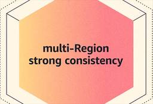
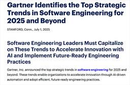

Publickey
https://www.publickey1.jp/
Enterprise ITに軸足を置き、新たにIT業界を変えつつあるクラウドコンピューティングやHTML5など最新の話題を、ブロガー独自の分析を交え、充実した記事で紹介するブログです。毎日更新しています。
フィード
「Oracle Database@AWS」正式提供開始。これでAWS、Azure、Google CloudすべてでOracle Cloudインフラを用いたデータベースが利用可能に
Publickey
オラクルは、AWSにOracle Cloudのインフラを持ち込み、そこで同社のデータベースサービスを提供する「Oracle Database@AWS」の正式提供を開始したと発表しました。 Oracle Database@AWS is now...
2日前

Amazon DynamoDB、複数リージョンでも強整合性によるデータの一貫性を提供開始
Publickey
Amazon Web Services（AWS）は、複数のリージョンにレプリカを持つことで高い可用性と性能を実現するAmazon DynamoDBグローバルテーブルが、複数リージョンにおいても強整合性によるデータの一貫性を実現する機能を提供...
3日前
Nuxtの開発元NuxtLabs、Next.jsの開発元Vercelへの合流を発表
Publickey
Webアプリケーションフレームワーク「Nuxt」の開発元であるNuxtLabsは、同じくWebアプリケーションフレームワーク「Next.js」の開発元であるVercelへの合流（Join）を発表しました（Vercelの発表、NuxtLabs...
4日前

主要なソフトウェアエンジニアリングのトレンド、AIネイティブなソフトウェアエンジニアリング、生成AIプラットフォームエンジニアリングなど、ガートナーが発表
Publickey
調査会社の米ガートナーは、2025年以降のソフトウェアエンジニアリングにおける主要な戦略トレンドを発表しました。 同社が発表した6つのトレンドの概要を以下にまとめました。 AIネイティブなソフトウェアエンジニアリング ガートナーは、2028...
4日前
オラクルが超大型クラウド案件を獲得、年間300億ドル（約4兆5000億円）。シェアでGoogle Cloudを逆転できるか？
Publickey
米オラクルが6月30日に米国証券取引委員会に提出した書類において、年間300億ドル（1ドル150円換算で4兆5000億円）の超大型クラウド案件を獲得したことが明らかになりました。 書類には次のように今後の同社の売上に関する見通しが説明されて...
5日前
わずか3日で全世界販売本数800万本突破！ モンスターハンターワイルズにおけるTiDBの導入背景と役割［PR］
Publickey
今年（2025年）2月にカプコンからリリースされた「モンスターハンターワイルズ」は、ハンターとなったプレイヤーが荒野を舞台にモンスターと戦いながらストーリーを進めていくオンラインゲームです。 人気シリーズ「モンスターハンターシリーズ」の最新...
6日前
プログラミングのためのBGMや環境音など。仕事や勉強の邪魔にならない無料で使えそうな音源集。2025年版
Publickey
在宅で仕事や勉強をしている時間が増えてくると、ずっと無音だと寂しい気がして、できれば仕事の邪魔にならないBGMや環境音があるといいなあ、と思ったことはありませんか？ 今年も、そうした音源を最新のものにアップデートした2025年版を紹介しまし...
6日前

Apple、Swift言語でAndroidを公式にサポートへ、「Android Workgroup」発足を発表
Publickey
AppleでSwift Core Teamに所属するMishal Shah氏は、SwiftでAndroidを公式にサポートすることを目的とした「Android Workgroup」の発足を発表しました。 Announcing the Swi...
8日前
AIに仕様書を読ませるとテストケースを自動生成、テストコードも書いてくれる「Autify Nexus」、Autifyが発表
Publickey
テスト自動化ツールなどを提供するAutifyは、仕様書を読み込ませることで仕様に基づいたさまざまなテストケースを自動的に生成するテストデザイン機能や、テストしたい内容を自然言語で指示することで自動的にテストシナリオとテストコードを生成する機...
10日前
HPE、ジュニパーネットワークスの買収完了を発表
Publickey
Hewlett Packard Enterprise（HPE）とジュニパーネットワークス（以下ジュニパー）は、HPEによるジュニパーの買収が完了したことを発表しました。 HPEによるジュニパーの買収は、2024年に発表されていましたが、その...
10日前
「Cloudflare Containers」ベータ公開、CDNエッジでコンテナが実行可能に
Publickey
Cloudflareは、CDNエッジでコンテナ型仮想マシンを実行可能にする新サービス「Cloudflare Containers」のベータ公開を発表しました。 Cloudflare Containers are now available ...
10日前
「KubeCon + CloudNativeCon Japan 2025」全セッションがYouTubeで公開開始
Publickey
先月（2025年6月）に日本で初めて開催されたクラウドネイティブ関連技術における業界最大のイベント「KubeCon+CloudNativeCon Japan 2005」の、全セッションの動画がYouTubeで公開されました（動画のリスト）。...
10日前
HashiCorp創業者のミッチェル・ハシモト氏が打ち明ける、一緒に仕事をして最高だったクラウドベンダーはMS、Google、Amazonのどれだったか？
Publickey
HashiCorpを創業したミッチェル・ハシモト氏は、2024年に同社を去った後、現在は個人開発者としてターミナルエミュレータ「Ghostty」の開発に取り組んでいます。 HashiCorpは、特定のクラウドに依存しないTerraformや...
12日前
Cloud Native Computing Foundationの新トップに、OpenInfra Foundationトップとの兼任となるJonathan Bryce氏が就任
Publickey
Linux Foundationは、同団体傘下でクラウドネイティブを推進するCloud Native Computing Foundation（CNCF）の事実上のトップとなるエグゼクティブディレクターにJonathan Bryce（ジョナ...
12日前
Visual Studio CodeのAIエディタ化が前進、GitHub Copilot Chatがオープンソースで公開。現在プレリリース版
Publickey
Visual Studio Codeの拡張機能「GitHub Copilot Chat」のソースコードがMITライセンスで公開されました。 公開されたソースコードはまだバージョン0.29のプレリリース版と位置づけられています。 オープンソー...
13日前